Supported-Graphene Nanoscale Thermal Rectifiers
Heat dissipation is becoming one of the harder limits on how densely you can pack modern devices, which is why thermal rectifiers (components that conduct heat differently depending on direction, the thermal equivalent of a diode) are worth building. Originally, thermal rectification is defined as the difference between the higher heat flux and lower heat flux, divided by the lower heat flux but this definition considers a uniform heat flux through the device, which is more adapted for the devices with suspended (isolated) graphene that is studied in most published work. Real and more practically integrated devices are supported by a substrate so I built and measured a supported version instead, and worked out a conductance-based way to define the thermal rectification that accounts for heat continuously leaking into the substrate underneath.
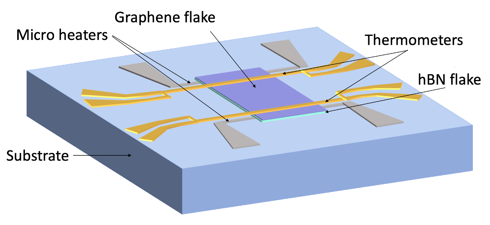
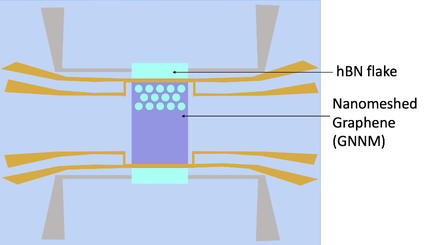
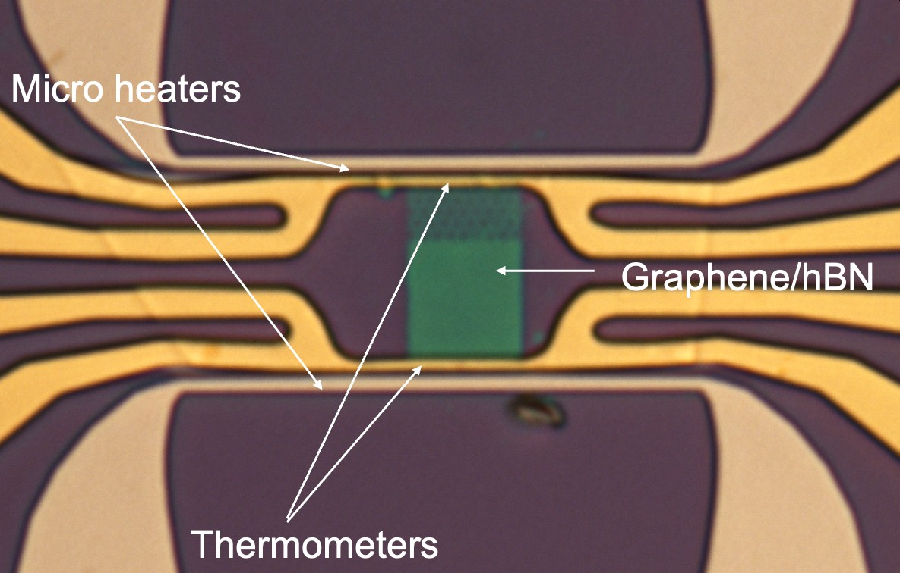
The device itself is a multilayer graphene/hBN heterostructure built on a Si/SiO₂ substrate (500 nm oxide). A ~20 nm hBN flake is transferred first, acting as an electrically insulating layer that preserves graphene's thermal properties while providing mechanical support; a 3–7 nm multilayer graphene flake goes on top of that. Heat is injected with two Pt microheaters (~22 µm long, 50 nm thick, ~9 µm apart) and read out with two Au nanowire thermometers (~7 µm long, 75 nm thick) on either side of the channel (deliberately short, to minimize temperature variation along each thermometer and thus ensure precise temperature measurements). The device is geometrically symmetric by design, so that any measured rectification can be attributed to the engineered asymmetry (a partially nanomeshed region covering roughly one-third of the graphene channel) rather than to fabrication imperfections.
I fabricated 36 samples with different configurations of the device myself, each one through six clean-room stages from bare substrate to finished device:
Contacts & Heaters
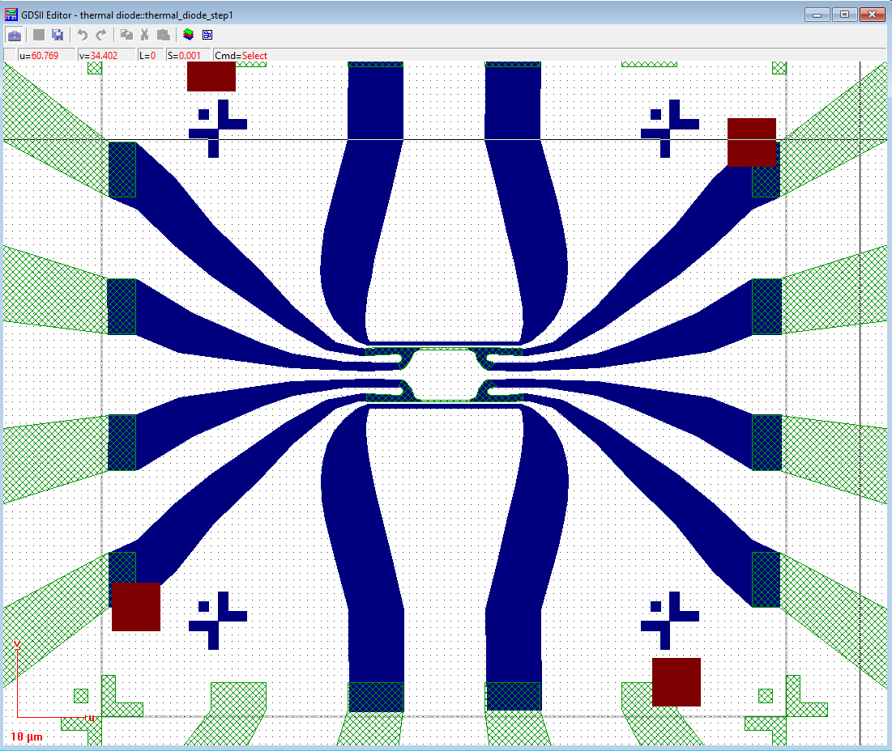

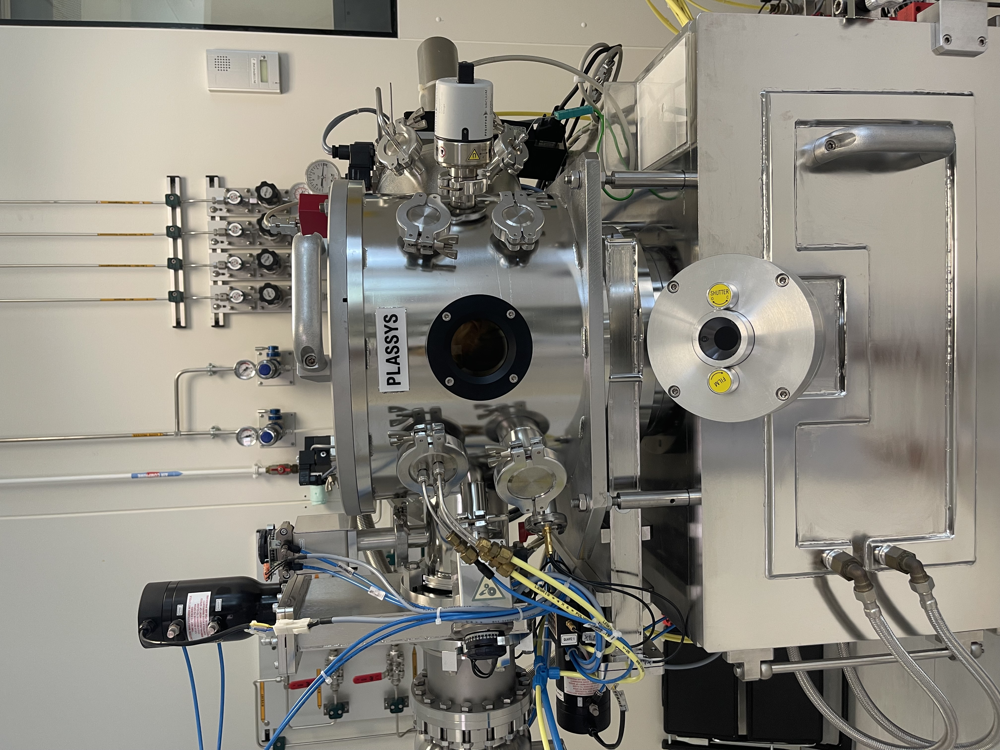
EBL + 5/45 nm Ti/Pt e-beam evaporation + lift-off : Designed in GDSII, patterned by e-beam lithography, then deposited in the PLASSYS evaporator : the two 22 µm Pt microheaters and their contact pads, ~9 µm apart.
2D Materials Transfer


Mechanical exfoliation + automated dry transfer : hBN and graphene flakes are exfoliated onto PDMS/PPC stamps, then picked up (while heating the sample holder in the transfer stage to 55 °C)and dropped (precisely melted by heating the sample holder to 110 °C): hBN first, graphene on top precisely covering or at least between the two microheaters using the automated dry-transfer stage.
Flake Thickness Measurement

AFM (tapping mode) + Gwyddion : Confirms flake thickness before moving on : typically 20–30 nm for hBN and 3–7 nm for graphene.
Reshape hBN


EBL + SF₆ reactive-ion etching : Trims the hBN into a symmetric rectangle spanning both heaters, so the finished device stays geometrically balanced.
Au Thermometers
EBL + 5/75 nm Ti/Au evaporation + lift-off : Two Au nanowire thermometers are patterned directly on the graphene, one on each side of the channel.
Graphene Flake Reshaping & Nanomeshing

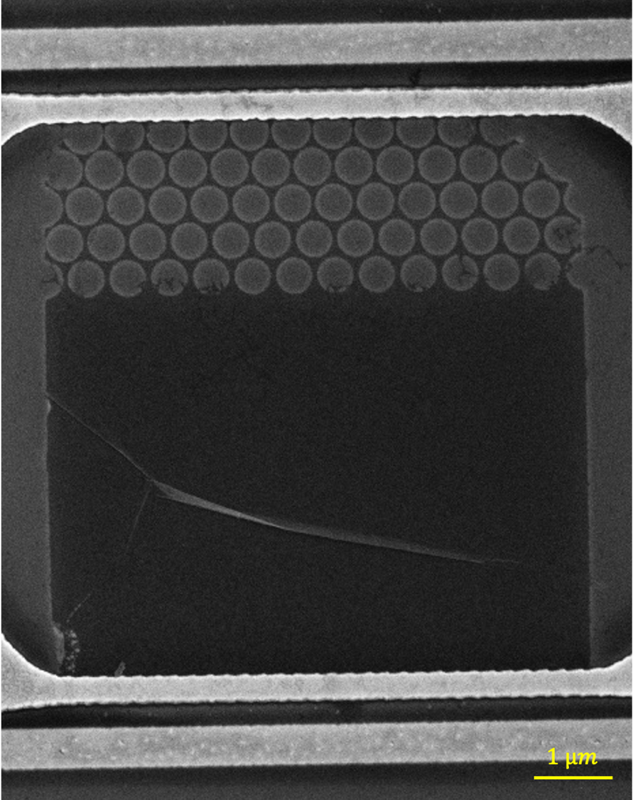
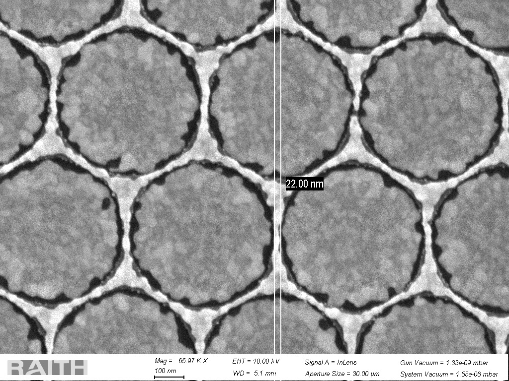
High-resolution EBL (CSAR 62) + O₂ plasma : Shapes the graphene channel and patterns a 20–30 nm nanopore array across one-third of it : the engineered asymmetry the whole experiment is built to test. Neck width was tuned via 24 EBL dose tests across four nanomesh designs, landing on 22 nm with the 125 nm design at a dose of 1.6.
Measurement & Modeling
Electrical measurement : Each Pt microheater can be heated through driving a small current across it, with the driven and "unheated" microheater swapped to measure rectification in both directions. The temperature is measured through the measure of the calibrated Au thermometers' resistance at each end of the graphene flake.
COMSOL modeling : In parallel, I built an electrothermal model of the exact device geometry in COMSOL Multiphysics to account for heat lost into the substrate and non-uniform heat flux : the basis for the conductance-based definition of thermal rectification this internship proposed. The simulated temperature field already hints at the effect: nanomeshing changes the heat-flux profile where the porous region begins.
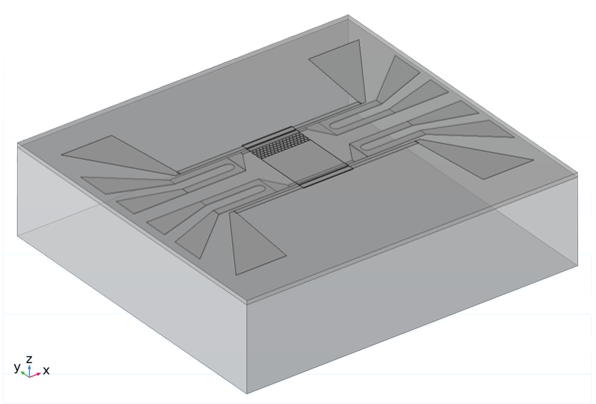
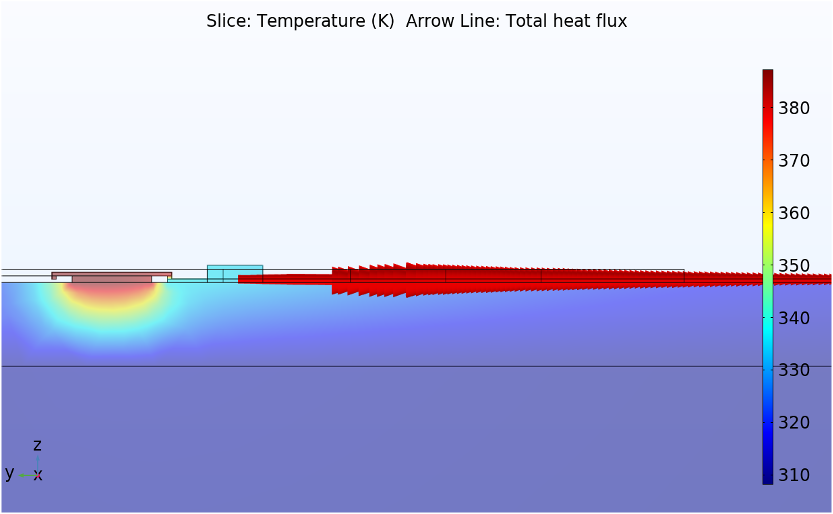
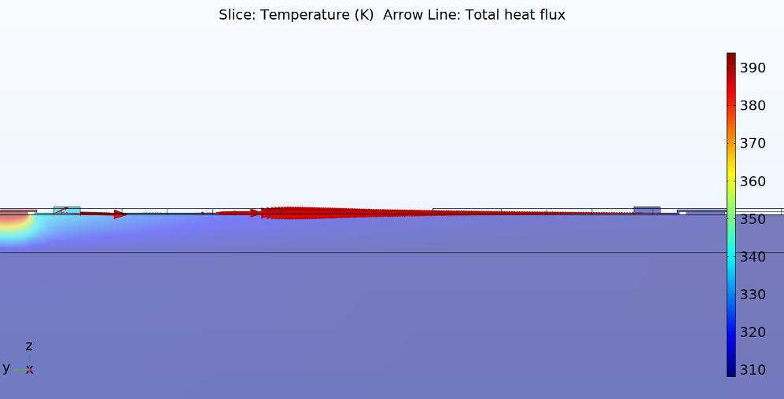
Results
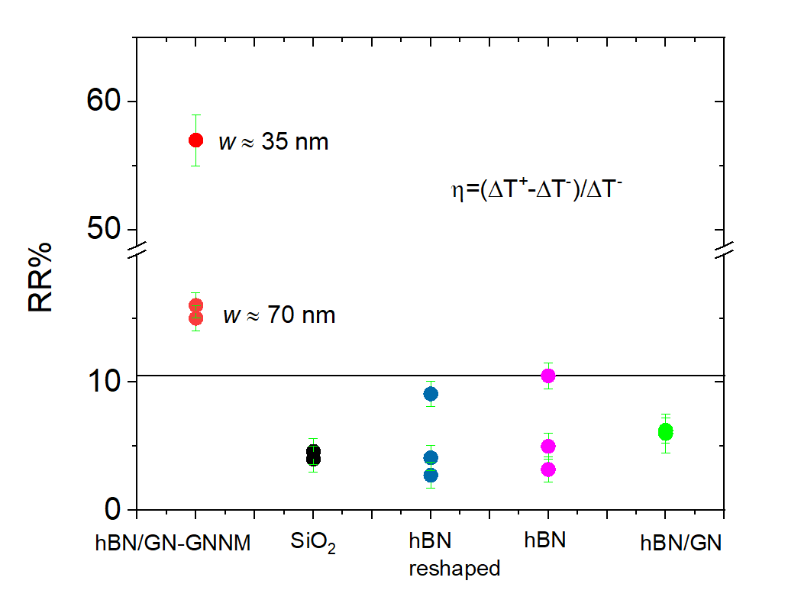
The measurements confirm it: heat conducts differently depending on the heating direction. Symmetric control devices (bare substrate, hBN-only, pristine graphene) showed only 4–10% asymmetry, essentially fabrication noise. Add the nanomesh and the thermal rectification reaches visibly high values up to 57%